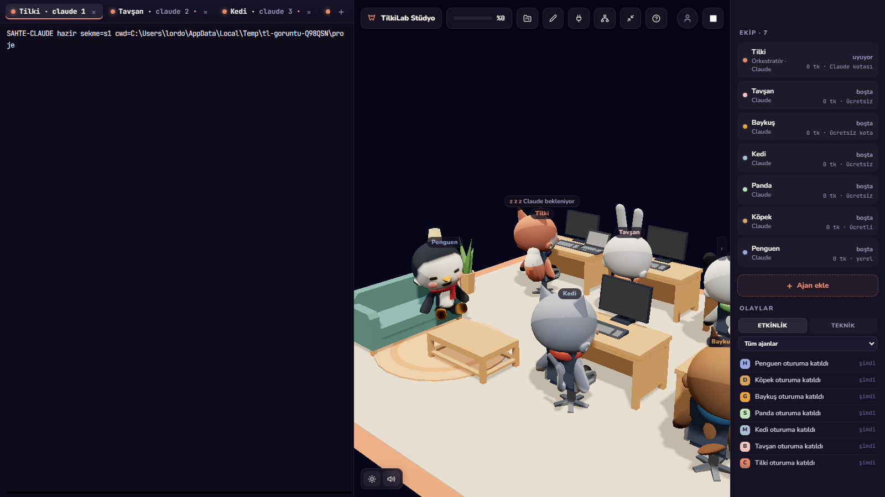

Save Claude Quota with Multi-Agent Orchestration
Flagship coding models excel at high-level architecture and edge-case reasoning, but wasting their context window on verbose test runs and repetitive refactors drains quotas fast. Here is how to delegate smartly.
The Context and Quota Trap
When you run an autonomous agent on a large codebase, token consumption is dominated by non-reasoning overhead:
- Command Outputs: Running a test suite or type-check script often dumps hundreds of lines of compiler logs into the agent's context window.
- Repetitive Edits: Writing boilerplate getters, test assertions, or translation dictionaries requires high token volume but low algorithmic complexity.
- Context Compounding: As a single agent session grows, every subsequent turn re-sends the entire conversation history to the model. The per-turn cost grows with the session, so the cumulative cost grows faster than linearly — roughly quadratically in the number of turns.
If you run a top-tier model for both high-level design and low-level execution, you quickly hit rate limits or exhaust monthly token budgets.
The Orchestrator-Worker Architecture
The solution is a tiered agent architecture:
- Orchestrator Agent (Flagship Model): Reads the high-level goal, surveys the project architecture, writes precise module specifications, and assigns narrow implementation tasks.
- Worker Agents (Economical Models): Run in parallel terminals or worktrees using lighter models (for example a Haiku-class model, a free OpenCode model, or DeepSeek). They receive small, targeted prompts and return clean code diffs.
- Verification Agent: A lightweight runner that executes unit tests, lints the diff, and reports a concise pass/fail status back to the orchestrator.
Rule of Thumb: Never feed more than 50 lines of raw compiler or test output to your orchestrator. Have a sub-agent summarize errors into a three-bullet defect list.
How to Set Up Model Delegation in Practice
Pattern 1: The Scoped Prompt Envelope
When having the orchestrator delegate a task to a worker agent, use a standardized prompt envelope that limits the sub-agent's search space:
# Delegated worker prompt
claude --model <cheaper-model> "TASK: Implement validateEmail() and validatePassword() in src/utils/validators.ts.
CONSTRAINTS:
- Use only regex standards defined in docs/security.md.
- Do not modify any files outside src/utils/.
- When complete, run 'npm test test/validators.test.ts' and confirm 100% pass."Because the worker model is constrained to one file and one test file, its context window stays small (under 15,000 tokens), costing a fraction of a full Sonnet interaction.
Pattern 2: Worktree Sandboxing for Economical Models
Economical models are fast and cheap, but they occasionally make hallucinated file edits. Giving the worker agent its own Git worktree ensures that any unintended modifications remain strictly isolated:
# Create isolated worktree for worker agent
git worktree add ../worker-validators -b chore/validators
# Worker performs tasks in isolation
cd ../worker-validators
claude --model <cheaper-model> "Implement email validation..."
# Check diff cleanly from main directory
git diff main..chore/validatorsMonitoring Live Token & Context Usage in Foxpit
Managing multiple models across scattered terminal sessions can make tracking spend difficult. Foxpit reads agent transcripts and hook events locally to summarize usage:
- Context Usage Bar: Each agent's card shows a context-usage bar so you can see when a session is filling up its context window and should be compacted or restarted. The Claude transcript reader estimates the window (defaulting to 200k tokens) and widens it when the model reports a larger one.
- Cumulative Token Counter: Each agent card shows a single cumulative token counter (input + output tokens) plus a completed-task count. A persistent per-agent ledger records tasks, tool calls, and an estimated cost, as well as savings when work ran on a free model.
- Orchestrator and Model Assignment: The first agent in a project is the orchestrator mascot (Fox). You can pick each mascot's driver and model in the team settings, so an orchestrator can assign work to sub-agents running cheaper or free endpoints.

Key Takeaways
- Reserve expensive flagship models for planning, high-level code review, and hard debugging.
- Delegate repetitive implementations, test generation, and documentation to lighter models.
- Never allow large test log dumps into the orchestrator's context window.
- Use Git worktrees to isolate worker agent experiments safely.
Ready to cut your AI coding token bills?